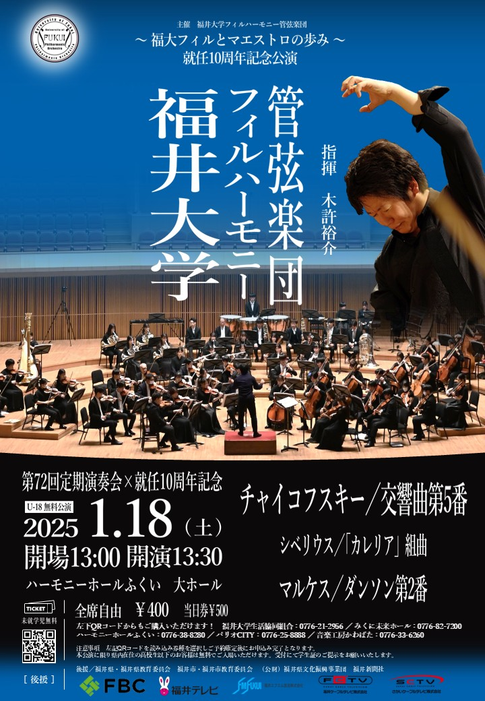

お知らせ
名誉指揮者就任
福井大学フィルハーモニー管弦楽団は、常任指揮者の木許裕介先生に、11月23日付で名誉指揮者の称号を贈ることとなりました。
木許先生は2015年から客演指揮者、2019年から常任指揮者として当団の発展に尽くされてきました。
10年に渡る先生との深い信頼関係は私たちにとってかけがえのないものです。
2025年1月18日開催の ｢第72回定期演奏会｣ は先生の指揮者在任10周年および名誉指揮者への就任を記念する公演となります。
公演の詳細情報は、順次公式Instagram、公式Xでお知らせしますので、ぜひフォローしてお待ちください！
演奏会情報

第72回福井大学フィルハーモニー管弦楽団定期演奏会
～指揮者ご在任10周年＆名誉指揮者ご就任 記念演奏会～
日時：2025年1月18日（土） 13:30開演
場所：ハーモニーホールふくい 大ホール
曲目：チャイコフスキー/交響曲第5番
シベリウス/「カレリア」組曲
マルケス/ダンソンNo2
指揮：木許裕介
チケットは こちら から
今年は当団常任指揮者の木許先生の在任10周年および名誉指揮者就任 を記念する特別なコンサートです！
また、令和6年1月1日に発生した能登大震災の復興に貢献するため、能登半島復興のために寄付することとしました。
福井県在住の高校生以下無料招待もさせていただきます！
入場の仕方はこちら↓
〇福井県の小中高校生の無料入場について
①電子チケットteketより「福井県高校生以下無料チケット」を選択・購入
または
②当日、受付にてお申し出ください
※当日は学生証（小学生以下は不要）をご持参ください
本公演は、興和江守様をはじめとする多くの企業様にご協賛をいただきました。
心より感謝申し上げます。
ご支援
福井大学基金を通じてサークルへご寄附いただけます。メリットとして税制上の優遇措置等があります。
ご寄附の方法： こちらにてご確認ください。
なお、ご寄附の際は、「③卓越高度専門職業人育成：研究支援事業」へのご寄附をお選びいただき、通信欄やメッセージ欄で「フィルハーモニー管弦楽団」への寄附とご指定下さい。
ご案内
新入生の方へ → 新歓情報
楽器体験会など新入生向けのイベント紹介をしています
演奏会情報をお求めの方へ → 演奏会情報
次回定期演奏会のお知らせ、過去の定期演奏会を紹介しています